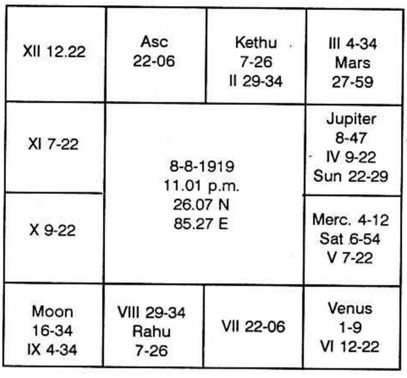
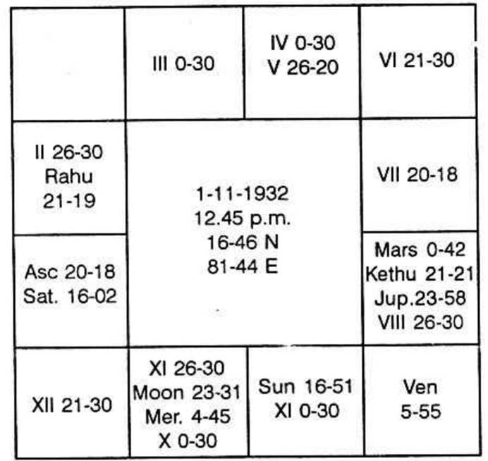

The twelve signs of the Zodiac rule certain parts of the body: One should not ignore that each sign has also subsidiary dominion over the part of the body denoted by the sign 180 away, i.e. opposite sign.
Max Heindel and Augusta Foss Heindel have said Affliction of Gemini may cause Bronchitis or weaken the arms and shoulders, but Sciatica, a Sagittarius disease, may also result. Taurus rules the throat; it has great sympathy with Scorpio, the sign that rules the generative organs, hence we note the change of voice in boys at the time of puberty; also woman, when she forsakes the path of chastity and leads a life of debauch, acquires a coarser voice. Taurus rules the larynx, but Mercury governs the air which stirs the vocal cords to vibrations, There is similar relation between Taurus (ruling the vocal organs) and Mercury (ruling the air which passes through the larynx) as between instrument and player. If Taurus (and Scorpio) are unafflicted, the vocal organ is in good condition, but an afflicted Mercury my nevertheless cause a functional disorder of the speech.
In the following two horoscopes let us see how the speech is affected. There is no free flow of speech. There is the impediment. It is a defect. It is not a disease. According to Krishnamurti padhdhati one is to judge the sub-lord of the 2nd Cusp. (Because among twins, one is an orator; the other stammers. Planets, Bhavas everything remain the same position. Only the cusps of each house changes. Professor Krishnamurti has discovered this truth which neither the Savants of Western Countries nor the Saints of our India had so far thought of or taught to us.)
Professor Krishnamurti says if the sublord of the 2nd cusp is Mercury, one speaks a lot, best fitted for Insurance agent, salesman, propagandist, etc. if the sub-lord is Mars, one will be blunt and outspoken; it is Saturn, he speaks a little and he drags on; if Jupiter, wise talk; if Venus, mostly the talk will be about the other sex or sexual life. If it is Rahu or Ketu, defect in speech. If Rahu or Ketu is in 12, defect in vision; if they are in 2, defect in speech.

Venus Dasa balance 15 years 1 month 24 days.
Second cusp is in the constellation of a watery planet and sub of Ketu (Mute signs are watery sign, Voice signs are airy signs).
Hence note where Ketu is. It is in the second sign. It has to signify 2nd house result also. Rahu which is in the opposite sign is in Ketu sub. Therefore, stammering must continue till Rahu Dasa Ketu Bhukti is over.
As the dasa lord receives beneficial aspect from Jupiter, Rahu itself will start improving one's speech by reducing stammering.
Rahu Dasa Venus Bhukti Jupiter Anthra onwards, stammering will disappear. i.e. November 1970, when Sun transits in Venus sign, Rahu star.

2nd cusp is in Saturn sign Jupiter star and Ketu sub. Further Rahu is to offer the 2nd house results also. Hence there is stammering. Mars afflicting Ketu or 2nd house by conjunction or aspect, the person takes much pain to speak out. If Jupiter conjoins or aspects, it is by Divine Grace, one will have the cure.